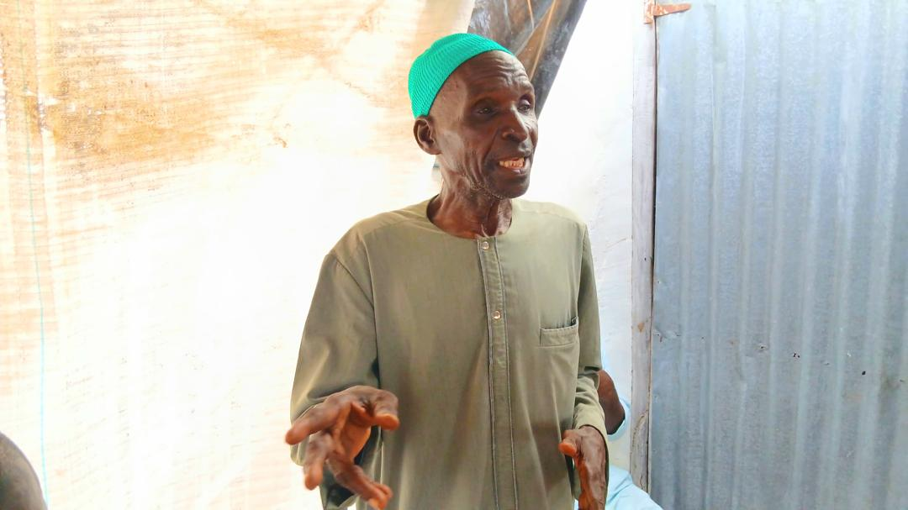
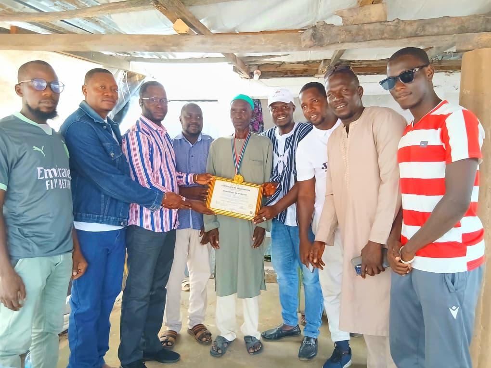
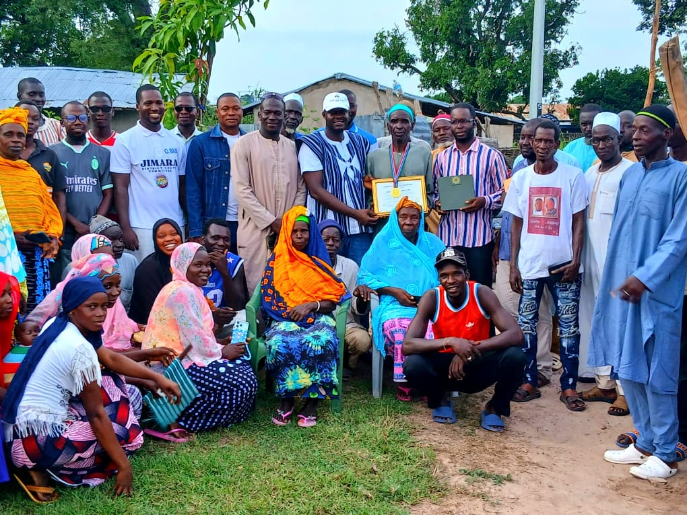
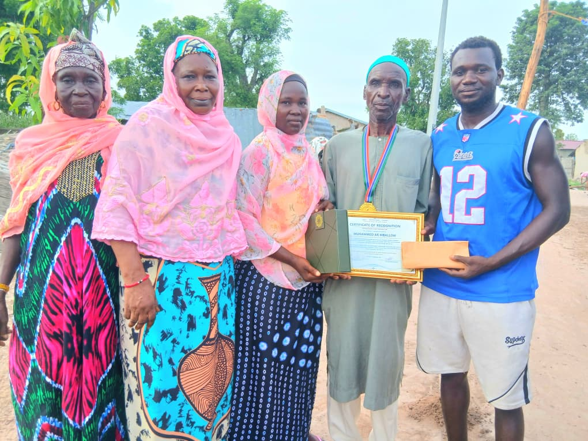
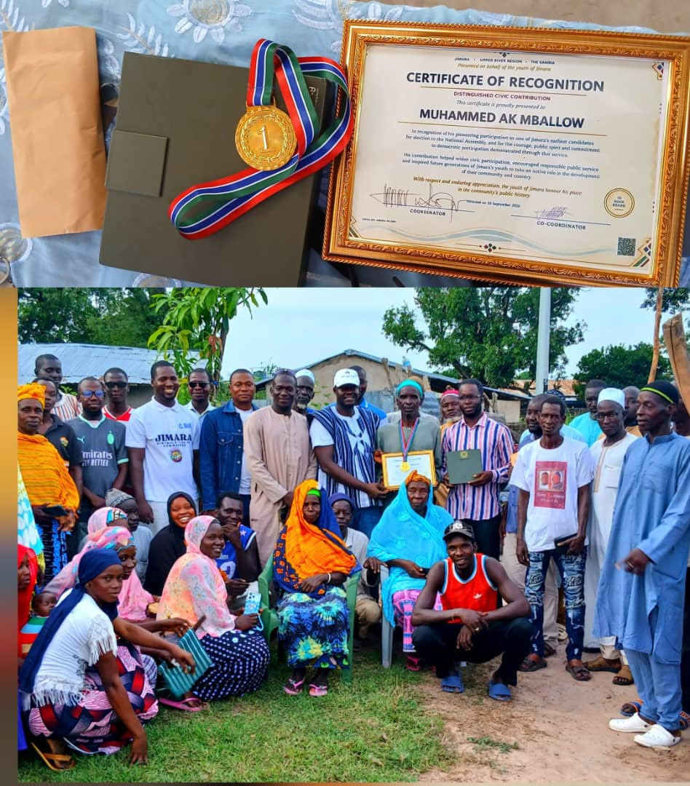

The task force
Community members organise around recognition.
A volunteer team is formed to plan, mobilise support and coordinate a fitting tribute to Muhammed AK Mballow.
From a task force to permanent service
JSI began as a community task force formed to coordinate the recognition of Muhammed AK Mballow, popularly known as Yoro Bullel. After the ceremony on 19 September 2026, that shared act of gratitude grew into a permanent NGO committed to supporting Jimara and surrounding rural communities.

Muhammed AK Mballow
Yoro Bullel
01 / How JSI began
The recognition was the beginning, not the end.
Community members first came together for a focused purpose: to plan and coordinate a dignified recognition of Muhammed AK Mballow, popularly known as Yoro Bullel. The task force wanted to honour a living legend whose “Be Like Them” philosophy had encouraged generations to value education, confidence and self-determination.
The ceremony on 19 September 2026 demonstrated what organised solidarity could achieve. It united families, elders, young people and community leaders around gratitude, service and a shared responsibility for Jimara’s future. The task force saw that this spirit should not end when the ceremony ended.
That conviction gave birth to the Jimara Solidarity Initiative: a permanent, non-profit and non-political NGO created to carry community solidarity into long-term action by recognising living and departed legends, mentoring young people, supporting education and helping rural communities respond to civic and social needs.
The task force
A volunteer team is formed to plan, mobilise support and coordinate a fitting tribute to Muhammed AK Mballow.
19 September 2026
The recognition ceremony brings the community together to celebrate service, wisdom and an educational legacy.
The permanent NGO
The task force evolves into JSI so that the same unity can support rural communities for generations to come.
The legacy of Yoro Bullel
In 1986, Muhammed AK Mballow, popularly known as Yoro Bullel, contested to represent Jimara in the National Assembly. He lost to veteran politician MC Jallow, with many Jimarankas supporting the opposing campaign.
Yoro Bullel chose wisdom over resentment. He saw that limited education, political awareness and exposure had left people vulnerable to the influence of those with greater knowledge and experience.
His answer was simple and profound: educate our children. Give them knowledge and exposure. Prepare them to understand institutions, manage their own affairs and stand among others as equals.

He could not rewrite the history of 1986, but he helped write a different future for every generation that followed.
02 / Our purpose
Our vision
We envision a community in which knowledge is widely shared, opportunity is not limited by circumstance, and informed citizens shape institutions and decisions that affect their lives.
Our mission
JSI mobilises people, partnerships and resources to honour Jimara’s living and departed legends, mentor the next generation, strengthen academic achievement, provide civic support and nurture ethical community leadership.
03 / Projects & programmes
JSI’s programme framework grows the work of the original task force into sustained, community-led support. New activities will be announced as plans, partnerships and resources are confirmed.
Founding project · Completed
The task force coordinated the community recognition of Muhammed AK Mballow on 19 September 2026. The project united residents around gratitude, heritage and the value of honouring service.
Programme priority
Recognising living community builders, remembering those who have passed and preserving the stories, values and service that shape Jimara’s identity.
Programme priority
Connecting young people with trusted role models who can offer guidance, exposure, encouragement and practical direction for education, work and community service.
Programme priority
Mobilising learning materials, guidance and community support to help students overcome barriers and pursue knowledge, confidence and opportunity.
Programme priority
Helping rural residents understand institutions, access trustworthy guidance and participate responsibly in decisions that affect their communities.
04 / Get involved
Support can take many forms. JSI welcomes people who can contribute time, skills, learning resources, professional guidance or responsible financial support.
Volunteer
Mentors, educators, organisers and professionals can help shape practical programmes for young people and rural communities.
Volunteer with JSIDonate responsibly
Contributions may support educational materials, mentorship activities, recognition projects and community assistance.
For your protection: JSI does not currently publish payment instructions online. Contact the team to confirm an official contribution channel before sending funds.
Ask about supporting JSI05 / Recognition ceremony



06 / What guides us
07 / Governance & transparency
As JSI completes its transition from a task force into a permanent NGO, its governance will be guided by community interest, non-partisanship, accountability and careful stewardship of every resource entrusted to the organisation.
Resources are directed towards JSI’s mission and community benefit, not private gain.
JSI is non-political and serves people without party affiliation or electoral agenda.
Decisions about funds, partnerships and programmes should be documented and subject to appropriate oversight.
Registration details, leadership structures, activity reports and financial information will be published as they are formally approved and available.
Transparency commitment
JSI will distinguish clearly between completed work, planned programmes and confirmed partnerships. It will not claim impact that has not been documented.
08 / Our co-founders
These founding task force members are guiding JSI’s transition into a permanent, non-profit and non-political NGO. Verified portraits and individual biographies will be added with each co-founder’s approval.
Co-founder · Founding task force member
Verified profile forthcomingCo-founder · Founding task force member
Verified profile forthcomingCo-founder · Founding task force member
Verified profile forthcomingCo-founder · Founding task force member
Verified profile forthcomingCo-founder · Founding task force member
Verified profile forthcomingThe work begins now
That is how disappointment becomes purpose. That is how a lesson becomes a legacy.